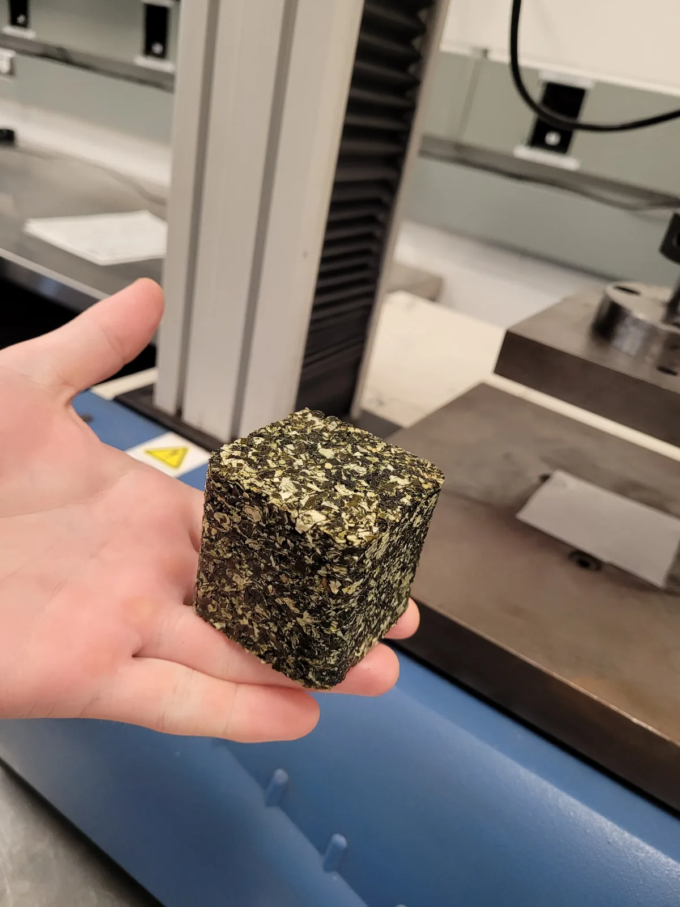
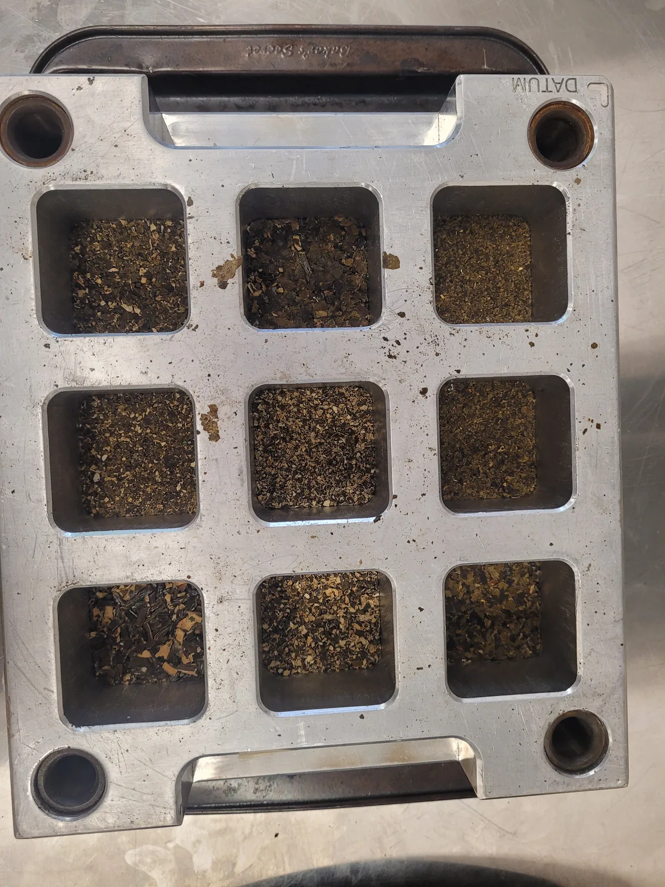
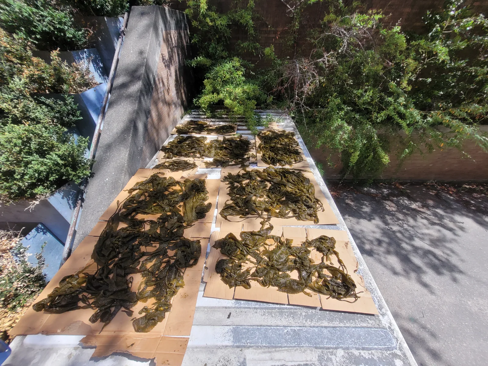
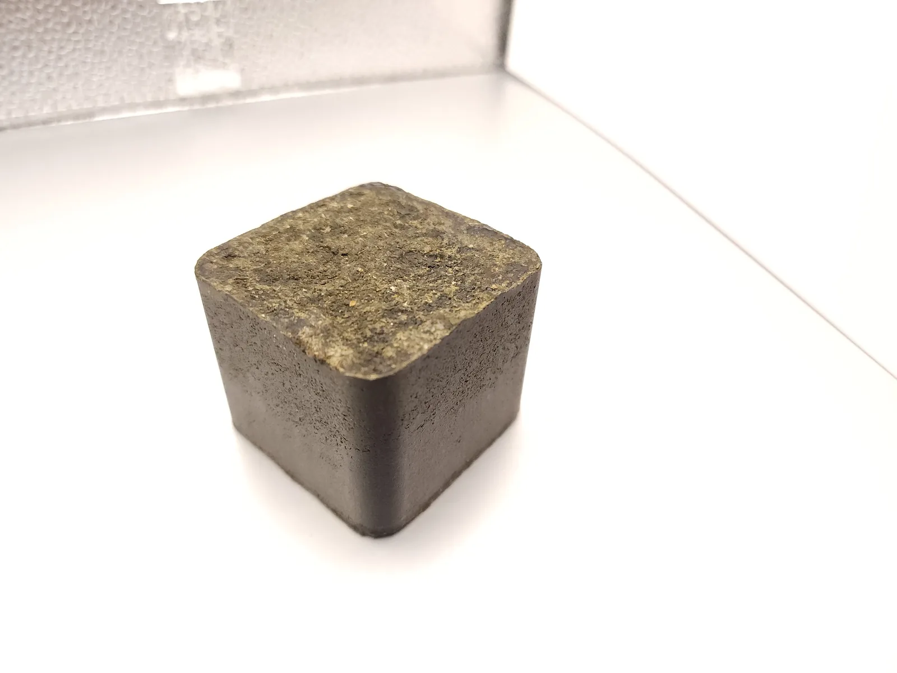

The earliest SeaBrick idea was a ceramic or cement block. In August 2021, after a long dinner with an engineer advisor, that was set aside in favour of something simpler and lower-carbon: compress kelp fibre with a natural binder, the way hardboard is made from wood, and form it in a mould. The question was whether such a material could be strong enough to build with and light enough to float.
That question went to the University of British Columbia.
The 2022 Capstone
In the autumn of 2022 a team of six Materials Engineering students took SeaBrick on as their Capstone project. They made and tested kelp composites through the term. By late November their strongest prototype had a density close to that of water, which prompted the idea of a two-part brick with hollow internal cells to bring the finished unit well below water density. In January 2023 the project reported that the student team had made a kelp composite stronger than concrete in compression.

A sponsored research agreement
In May 2023 the project signed a sponsored research agreement with UBC's BioProducts Institute. Two summer students, several of whom went on to become long-term advisors, worked on the composite's chemistry and manufacturing: alginate-based binders, de-algination of the raw kelp, and early bio-based coatings. By August 2023 the material had a name, Kelpstone, and the team was reporting compressive strengths in the range of 57 to 60 megapascals in lab specimens, roughly three times a typical concrete, at about half the weight.


That autumn three more Capstone teams, about twenty students across Manufacturing, Mechanical and Materials Engineering, took on the brick shell, the manufacturing process and a floating solar platform concept. In February 2024 UBC assigned its share of the resulting kelp-composite patent rights to the project.
What it taught us
The UBC work established that a bio-based composite could be strong, and it established how much work remained: moisture, durability in seawater, and a reliable supply of fibre. Those three problems shaped everything that came after, including the shift away from seaweed fibre described in later articles. Lab strength numbers from this period are historical results on small specimens. They are not a specification for the current brick.